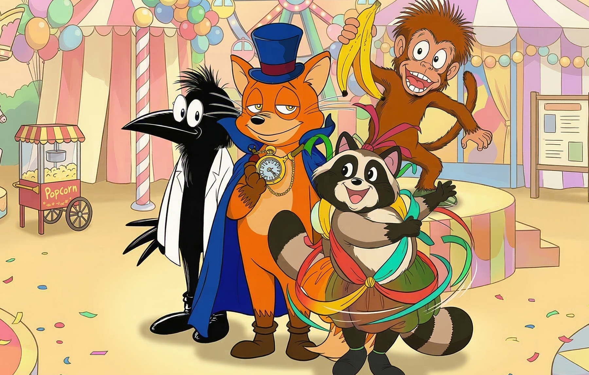

こもれびゆうえんちへようこそ！

キツネ団長やかあ博士たちと一緒に、楽しく遊んで学ぼう！
「こもれびゆうえんち」は子どもたちの好奇心と元気を応援する番組です。
毎週土曜日、朝8時30分からきらら放送でお届けしています。
スタジオの中にある「こもれびゆうえんち」で、今週はどんな冒険が待っているかな？
おしらせ
1997.09.20来週の放送予定について
1997.09.13秋の特別企画のお知らせ
1997.08.30夏休みスペシャル放送ありがとうございました
1997.08.02夏休みスペシャル放送のお知らせ
1997.07.05「みんなであそぼう！」収録参加者募集